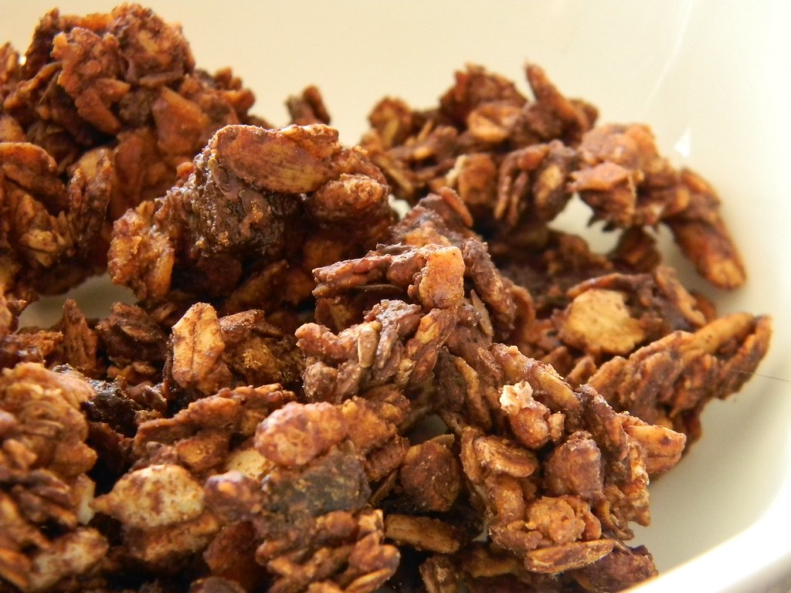

21 minutes cook time * 26 minutes total * 8 ingredients * 8 servingsThis delicious healthy granola recipe is the best! It's naturally sweetened with maple syrup (or honey). Just add oats, coconut oil, nuts and dried fruit.
This recipe was taken from here